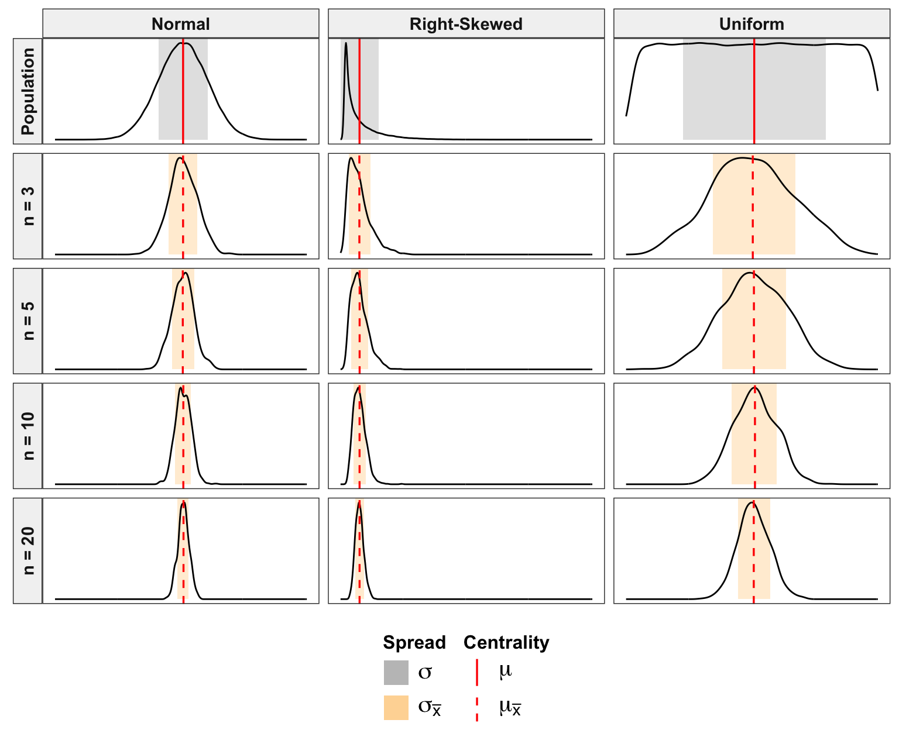

Code
suppressPackageStartupMessages({
library(tidyverse)
library(scales)
})
set.seed(4321)
N <- 100000
populations <- tibble(
Normal = rnorm(N, 0.5, 0.1),
Uniform = runif(N, 0, 1),
`Right-Skewed` = rbeta(N, 0.5, 8)
) |>
pivot_longer(everything(), names_to = "dist_type", values_to = "value")
pop_summary <- populations |>
group_by(dist_type) |>
summarise(mu = mean(value), sd = sd(value), .groups = "drop")
pop_list <- split(populations$value, populations$dist_type)
sample_sizes <- c(3, 5, 10, 20)
samples <- expand_grid(dist_type = names(pop_list), n = sample_sizes) |>
mutate(
type = paste0("n = ", n),
value = map2(dist_type, n, \(d, size) {
replicate(1000, mean(sample(pop_list[[d]], size)))
})
) |>
unnest(value)
plot_data <- bind_rows(
populations |> mutate(type = "Population"),
samples |> select(dist_type, value, type)
) |>
# order variable so it shows first population followed by increasing n
mutate(
type = factor(type, levels = c("Population", paste0("n = ", sample_sizes)))
)
# define data for spread
rect_data <- plot_data |>
distinct(dist_type, type) |>
left_join(pop_summary, by = "dist_type") |>
mutate(
n_val = parse_number(as.character(type)),
spread_label = ifelse(type == "Population", "sigma", "sigma[bar(x)]"),
width = ifelse(type == "Population", sd, sd / sqrt(n_val)),
xmin = mu - width,
xmax = mu + width
)
# define data for showing centrality
## population centrality
true_mean_data <- pop_summary |>
select(dist_type, intercept = mu) |>
mutate(
line_type_label = "mu",
type = factor("Population", levels = c("Population", paste0("n = ", sample_sizes)))
)
## sampling centrality
sim_mean_data <- plot_data |>
filter(type != "Population") |>
group_by(dist_type, type) |>
summarise(intercept = mean(value), .groups = "drop") |>
mutate(line_type_label = "mu[bar(x)]")
col_pop <- "gray40"
col_sam <- "orange"
plot_data |>
ggplot(aes(x = value)) +
geom_rect(
data = rect_data,
aes(xmin = xmin, xmax = xmax, ymin = 0, ymax = Inf, fill = spread_label),
inherit.aes = FALSE,
alpha = 0.2
) +
geom_density(aes(y = after_stat(scaled)), linewidth = 0.5) +
geom_vline(
data = true_mean_data,
aes(xintercept = intercept, linetype = line_type_label),
size = 0.6,
color = "red"
) +
geom_vline(
data = sim_mean_data,
aes(xintercept = intercept, linetype = line_type_label),
size = 0.6,
color = "red"
) +
facet_grid(rows = vars(type), cols = vars(dist_type), switch = "y") +
scale_fill_manual(
name = "Spread",
values = c("sigma" = col_pop, "sigma[bar(x)]" = col_sam),
labels = label_parse()
) +
scale_linetype_manual(
name = "Centrality",
values = c("mu" = "solid", "mu[bar(x)]" = "dashed"),
labels = label_parse()
) +
scale_color_brewer(palette = "Set2", guide = "none") +
guides(
fill = guide_legend(
override.aes = list(alpha = 0.25, color = NA),
nrow = 2
),
linetype = guide_legend(override.aes = list(color = "red"), nrow = 2)
) +
theme_bw() +
theme(
legend.position = "bottom",
legend.box = "horizontal",
legend.margin = margin(t = 5),
legend.text = element_text(size = 15),
legend.title = element_text(size = 12, face = "bold"),
legend.title.position = "top",
strip.text = element_text(size = 11, face = "bold"),
strip.background = element_rect(fill = "gray95"),
axis.title = element_blank(),
axis.text = element_blank(),
axis.ticks = element_blank(),
panel.grid = element_blank()
)